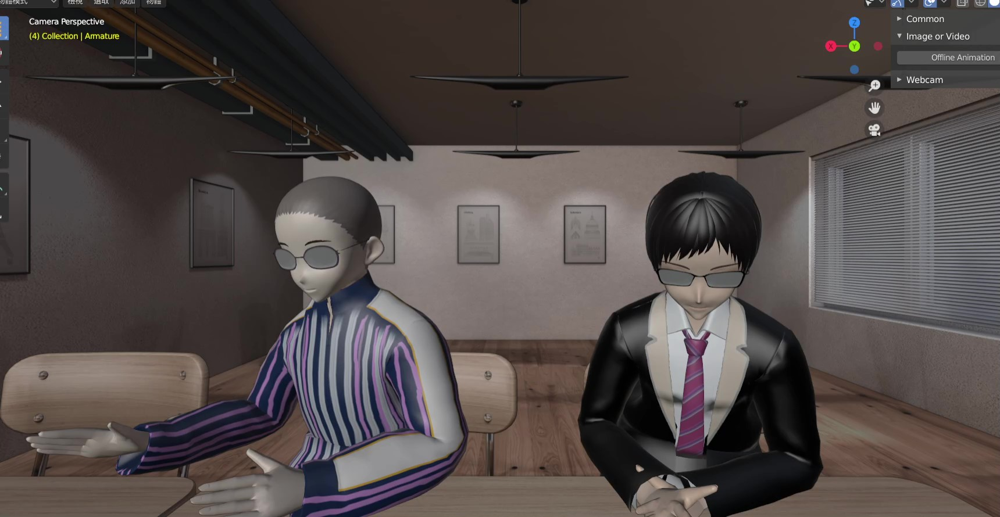
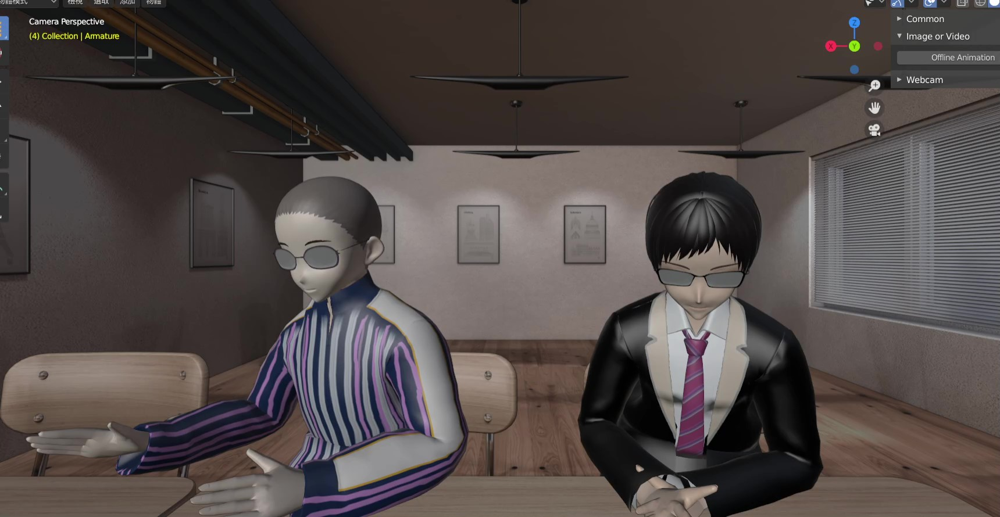

摘要
本研究開發了一個即時單階段姿態重塑系統，可以使用單隻羅技網 路攝影機或影片作為輸入，並控制塑模軟體 Blender 中虛擬角色的動作。 它基於 ROMP 單階段、多分支的姿態重塑迴歸網路。本研究擴展了單 人 ROMP Blender 虛擬人物操縱系統，讓其能一次控制 2~3 個虛擬人物。三 維人體姿態與外觀估計領域著重於改進網路架構和資料集，但其缺乏在虛 擬直播中的實際應用。此外，基於光學標記的動作捕捉系統需要高成本與 10~15 分鐘才能完成設置。為了解決這個問題，本研究開發了一種基於深度 學習的解決方案。本研究將應用於訪談型節目，在使用網路攝影機的情況 下，即時性能是每秒 14~20 幀，而在使用影片的情況下，它則是每秒 12~17 幀。本研究將動作捕捉系統的成本從 500 萬新台幣顯著降低到 1,000 新台 幣，並將系統設置時間從 10~15 分鐘減少到 3 分鐘。

 
